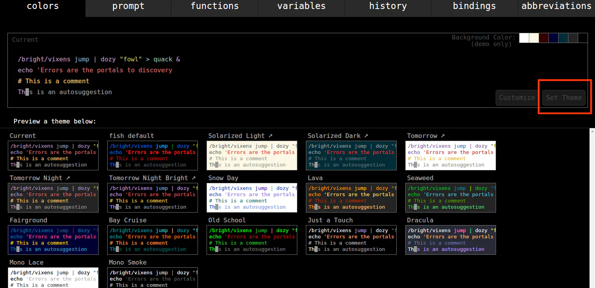
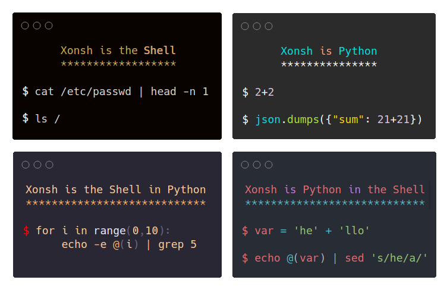
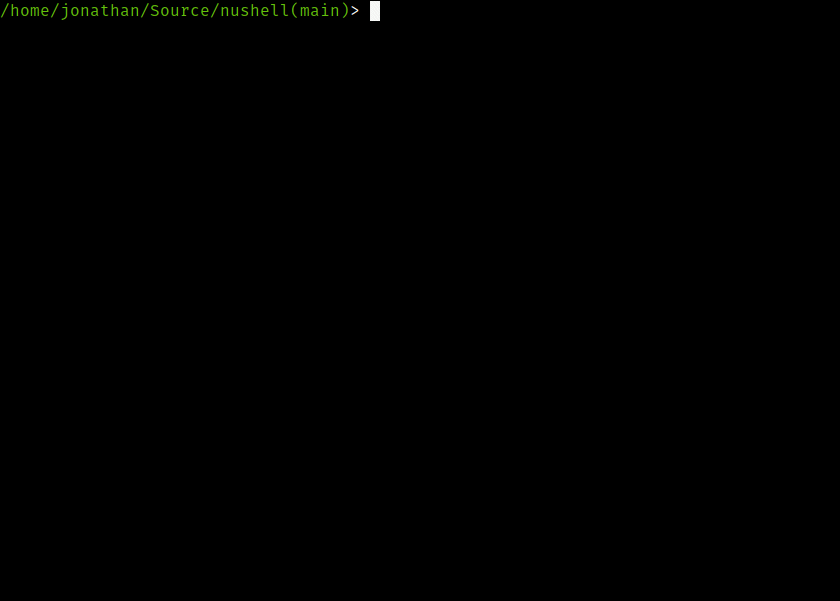
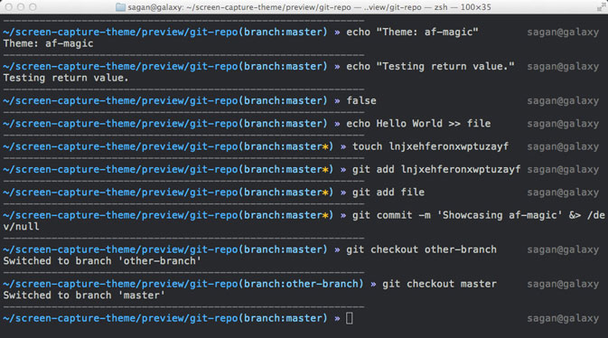

I love command-line because it makes me more productive.
Most of the time, I live in a Shell in daily work. Shell is simply a command-line interface (CLI) that allows users to interact with the operating system.
Since I have worked with command-line for so long, I tried various Shells. I find these 5 Shells worth to be known by more people.
Some of them are ready for daily usage, while some are still in rapid development. Maybe you will find the one you like as your next Shell.
Fish Shell
Fish stands for “the friendly interactive shell”.
It is a smart and user-friendly command line Shell for macOS and Linux family OS.
Many fancy features are included by default, such as syntax highlighting, auto-suggest as you type, and awesome tab completions.
The configuration file is located at ~/.config/fish/config.fish. We can add custom function to it. Fish also provides a web interface to configure the file. Run fish_config , the browser will open port 8000 of the machine, and the user can configure fish on the Web page. Nice!

Fish is a Shell with more than ten years of history, it’s mature and loved by many developers. I think the most impressive feature is auto-completion.
If you want to use it in daily work, please don’t forget oh-my-fish.
Oil Shell
Oil Shell is a new Unix shell. Shell scripting is a domain-specific language for dealing with concurrent processes, text strings, and the file system, it is hard to learn and a nightmare for maintenance.
| Oil is also aimed at people who know say Python or JavaScript, but purposely avoid shell
Since we have so many existing shell programs, you can not ignore them. Oil helps you gradually migrate away from Shell scripting:
bin/oshruns your existing shell scripts.bin/oilis a brand new language.
The Oil language is a new dialect which is parsed and evaluated like Python or JavaScript, it’s more concrete than Shell scripting.
The funny thing is, this project is implemented in Python, and then automatically translated to C++ with custom tools.
xonsh
xonsh is another Python implemented Shell.

xonsh‘s syntax is more like Python, actually, all Python code is runnable in xonsh. xonsh is based on Python, and with additional syntax added that makes calling subprocess commands, manipulating the environment, and dealing with the file system easy.
Unlike Oil, you can not reuse existing Bash scripts in xonsh.
Nushell
Nushell is a new Shell, written in Rust. It’s inspired by PowerShell in Windows. Rather than thinking of files and services as raw streams of text, Nushell looks at each input as something with structure(also with some unstructured part). In this way, users can make filters with Pipelines easily.

Furthermore, Nushell views data functionally, it use pipelines act as a means to load, change, and save data without mutable state.
Nushell has not reached release 1.0, but it’s worth a try for fun.
Zsh
Zsh is not a new Shell.
Zsh was first released in 1990 and is included in many OS. Actually, Mac OS has already replaced Bash with Zsh as the default shell in Catalina.
It’s fully compatible with Bash and has extremely rich plug-ins.
If you use Zsh, you won’t miss oh-my-zsh. It’s a community-driven framework for managing your zsh configuration, the repo contains hundreds of powerful plugins and beautiful themes.

Hope you enjoy these Shells, and happy command-line!
Join my Email List for more insights, It's Free!😋